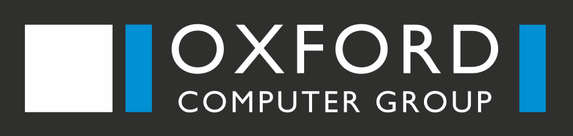

<div class="sidebar-filter" fxLayout="column" fxLayoutAlign="start center">
  <div class="logo" fxFlex="none">
    <a routerLink="">
        
      </a>
  </div>
  <div class="sidebar-seperator" fxFlex="none"></div>
  <div class="sidebar-item" fxFlex="none" *ngFor="let item of sidebarItems">
    <a [routerLink]="item.path">
        <i class="material-icons">{{item.icon}}</i>{{item.title|translate:lang}}
      </a>
  </div>
</div>